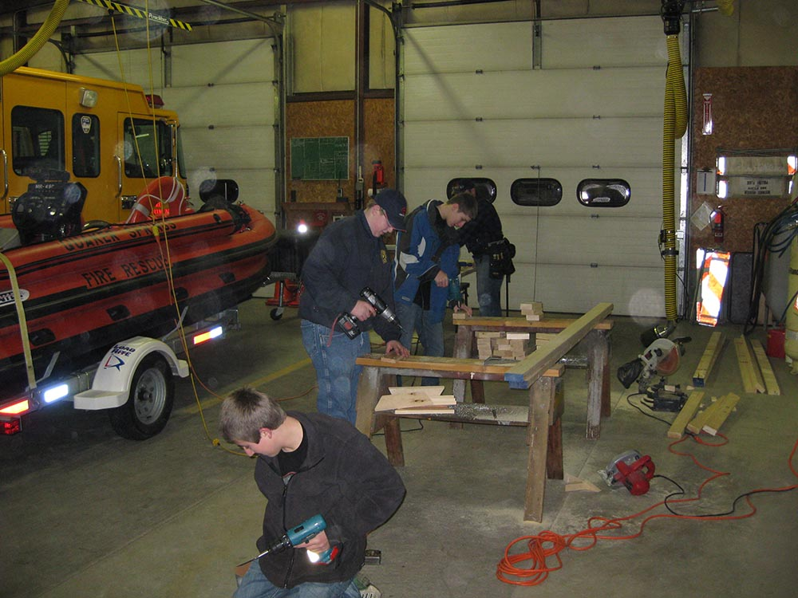

- Training will consist of class room and hands on training that will not endanger the member.
- Youth Firefighters will not be allowed to ride on apparatus for emergency calls.
- Exception being parades or special events.
- Youth Firefighters will not be allowed to be active in any dangerous situations.
- Youth Firefighters will be allowed to observe calls if they are paired up with a senior firefighter or Auxiliary member capable of devoting their full attention to the Youth Firefighter.

Youth FFs working on emergency road barricades